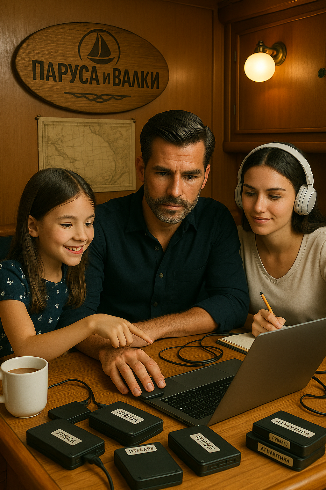

География с Антоном и Юлей
«География с Антоном и Юлей» — семейный познавательный проект команды яхты Dream Chaser, начавшийся в Италии после регистрации яхты под итальянским флагом. Антон, обаятельный рулевой, вместе с дочкой Юлей и оператором Соней рассказывают о путешествиях, городах и странах, оживляя географию через живые экскурсии и тёплое общение, продолжая исследовать мир.
← Вернуться на главную